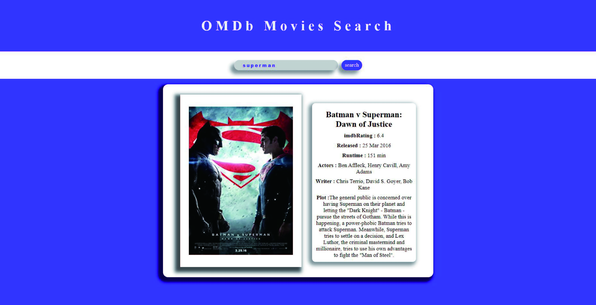

江政穆
我是江政穆，畢業於亞東技術學院材料與纖維系，而後興趣使然立志轉職成為前端工程師，各種渠道尋求資源學習，
其中包括一些學習分享網站、youtube 教程等，我希望將我所學運用到前端開發領域並持續發展。
目前熟悉基礎三大語言 HTML、CSS 和 JavaScript，並了解它們之間的關係。了解前端框架 Vue.js 並用於專案設計 。熟悉 Git、GitHub 了解版本控制、偕同開發概念。熟悉 CSS 預處理器 Sass 與 CSS 框架 Bootstrap 5 並運用於專案作品中。 能夠運用原生 js 與 axios 串接 api 並且，能使 RESTful 網路架構風格達到用戶操作的效果。
我善於理性思考，樂於學習勇於挑戰困難，擅長發掘問題並搜尋解決辦法。 我具有良好的溝通能力和團隊合作精神，期待能進入網頁前端團隊中，奉獻我所學，為團隊出一份力。
目前熟悉基礎三大語言 HTML、CSS 和 JavaScript，並了解它們之間的關係。了解前端框架 Vue.js 並用於專案設計 。熟悉 Git、GitHub 了解版本控制、偕同開發概念。熟悉 CSS 預處理器 Sass 與 CSS 框架 Bootstrap 5 並運用於專案作品中。 能夠運用原生 js 與 axios 串接 api 並且，能使 RESTful 網路架構風格達到用戶操作的效果。
我善於理性思考，樂於學習勇於挑戰困難，擅長發掘問題並搜尋解決辦法。 我具有良好的溝通能力和團隊合作精神，期待能進入網頁前端團隊中，奉獻我所學，為團隊出一份力。
技能
HTML、CSS、Javascript
Vue.js、Bootstrap 5
Git & GitHub、Sass & Scss

OMDb Movies Search
說明 :
- -連接 OMDb API (Open Movie Database API)
- -搜尋處輸入電影名稱(英文)可搜尋到相關電影簡介
- -簡介點擊海報可進入電影介紹頁面
- -結果包含電影發行時間、演員、導演等
HTML
CSS
Javascript
OMDb API
Travel List
說明 :
- -紀錄美食、景點的網頁
- -使用Json Server 串接資料
- -點擊城市會跳出當地美食、景點
- -紀錄頁面可以新增、查詢、修改、刪除資料
Vue Vite
Vue Composition
Pinia
Json Server
Axios
SASS
RWD